BlackHouse / Crownfall Arena / GOAL 019
Unedited PlayCanvas captures. Same competitive camera positions, FOV and viewport for each pair. Baseline: 8ad97bb (GOAL 018A). Actors staged for camera comparison; the combat views restore the normal bot controllers and advance combat. Desktop automation does not verify physical iPhone performance.
Play GOAL 019 · Production and verification report
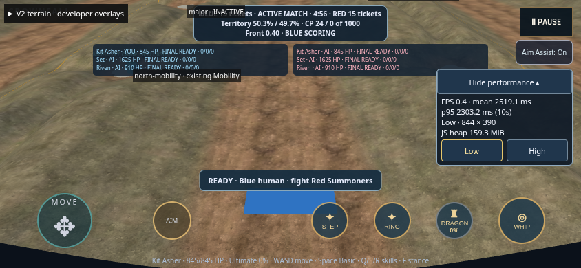
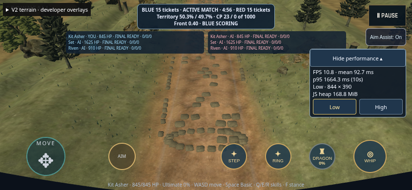
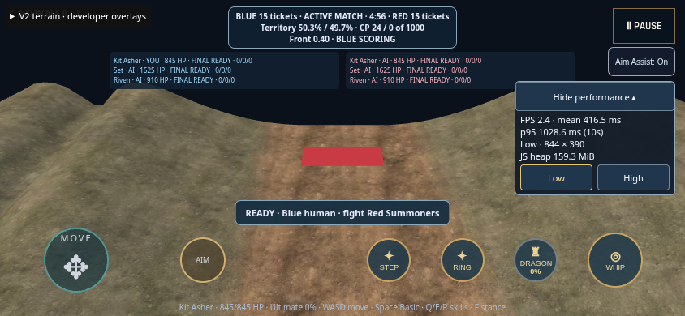
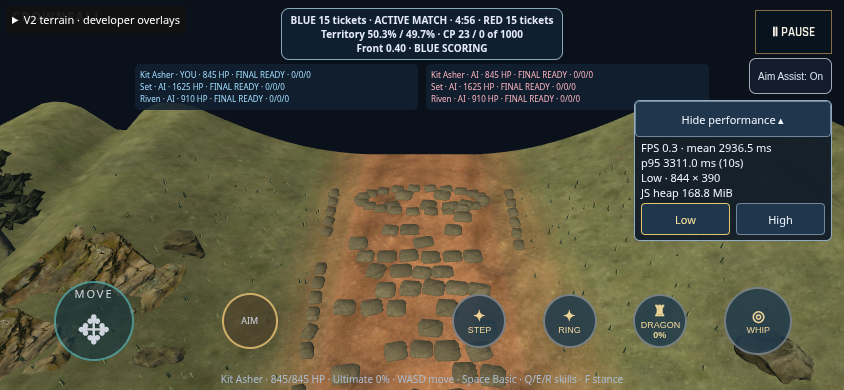
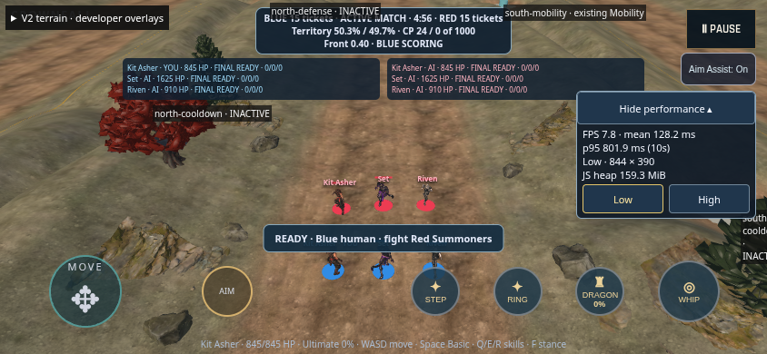
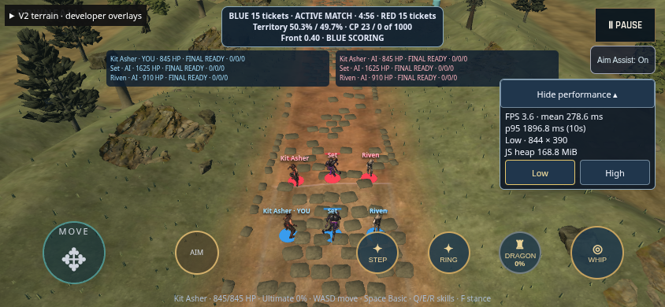
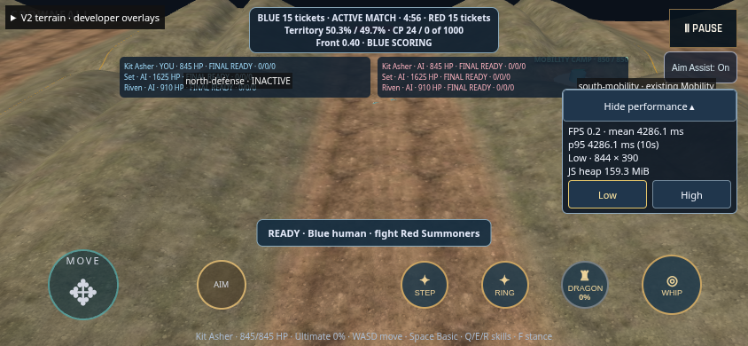
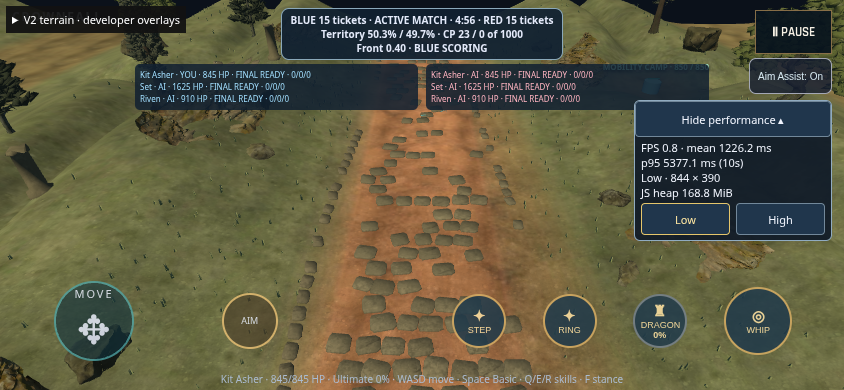
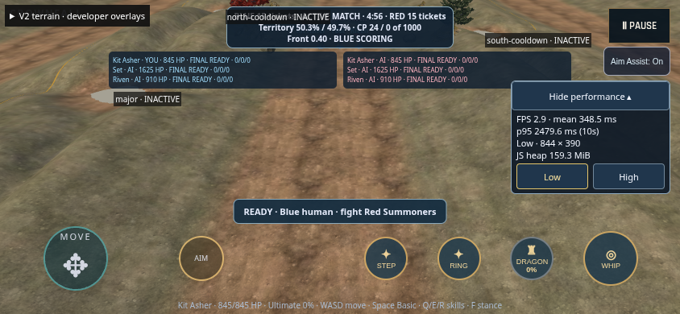
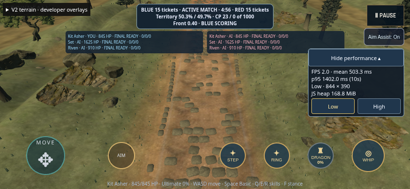
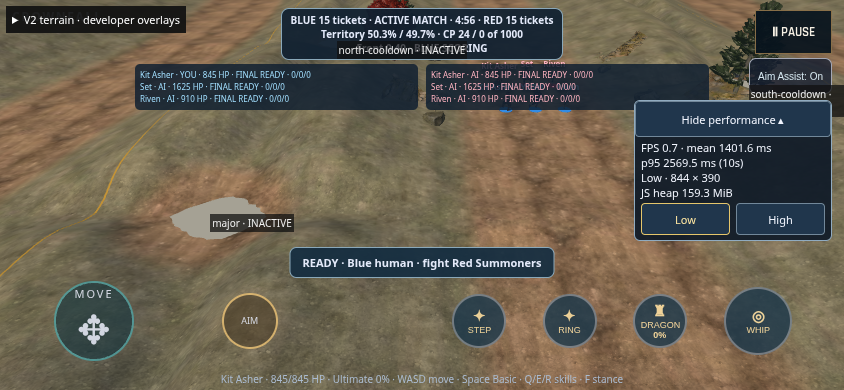
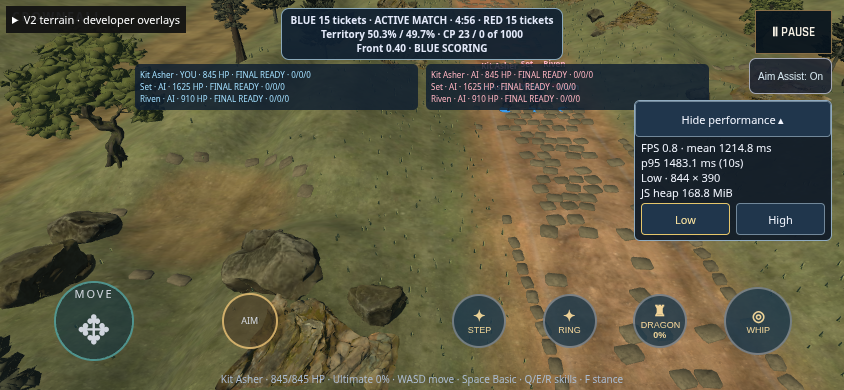
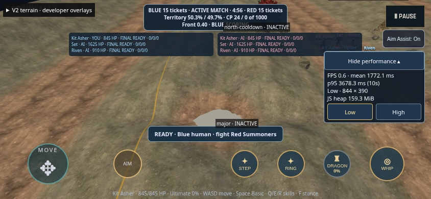
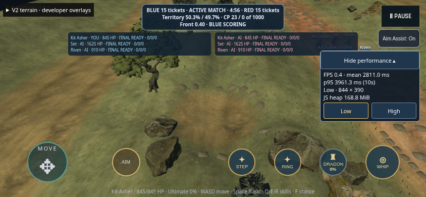
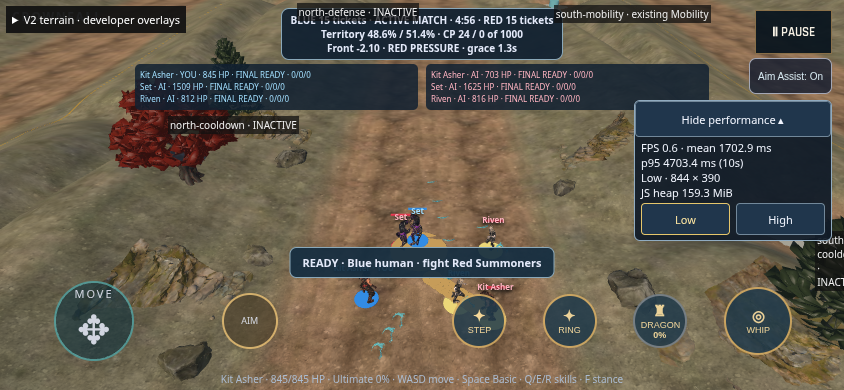
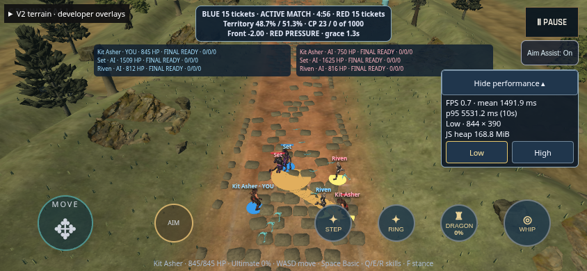
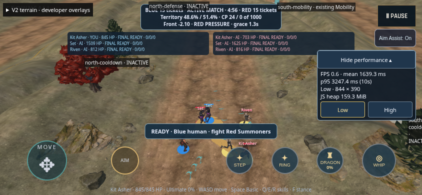
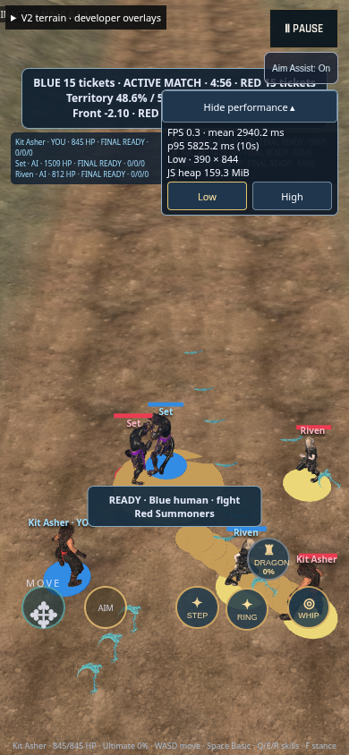
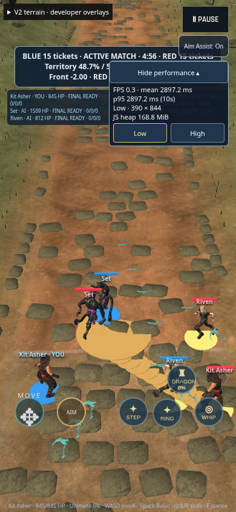
The lane now carries a broken stone route through both spawn approaches. Rock groups and waystones break up the banks; richer woodland, open clearings and scattered foundations distinguish Wilderness from the causeway. Matte rock response, restrained foliage, and stronger directional light give the terrain more depth. Blue and Red ownership follow the terrain, and diagnostic pads and labels are opt-in.
The existing tree silhouettes remain visibly stylized beside scanned rocks. Some long views still expose the smooth original hills, and portrait play retains a crowded inherited HUD. Decorative rock banks have no new collision; their presentation culling protects the player view. Physical iPhone tuning remains open.